WordCamp Brisbane, 2015
Recently, I gave a talk at WordCamp Brisbane 2015 relating to Modern Design. It covered topics like designing in the browser, mobile first and focusing on data. I've decided to post my slides and speaker notes for future reference.
This was undeniably the best talk I've given so far and I'm really grateful I was given the opportunity to talk at WCBNE. If you have any follow up questions, please don't hesitate to contact me via email or twitter.
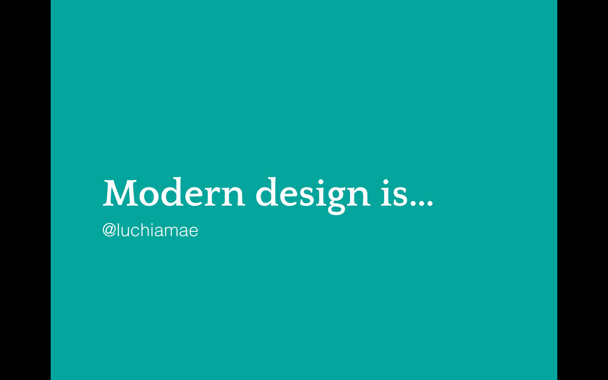
Hello. I wanted to say a quick thank you to the WordCamp organisers. I’ve been to quite a few conferences this year, both as a speaker and attendee, and this one has been flawlessly organised and extremely well run. I think they deserve a round of applause for all their hard work.
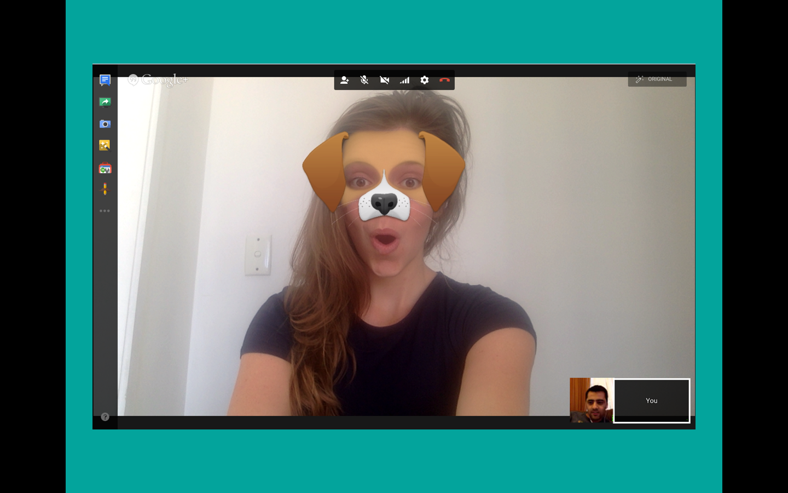
So, this is me. I’m Lucy Bloomfield. I run a consulting business and have worked for a number of international companies. One of my best clients and most enjoyable work thus far has been with a company in the US called Security Innovation. I’ve worked with them for the last 12 months and have been really lucky with the projects I’ve been given. My day-to-day job varies but I guess you could call me lead guru on everything digital.
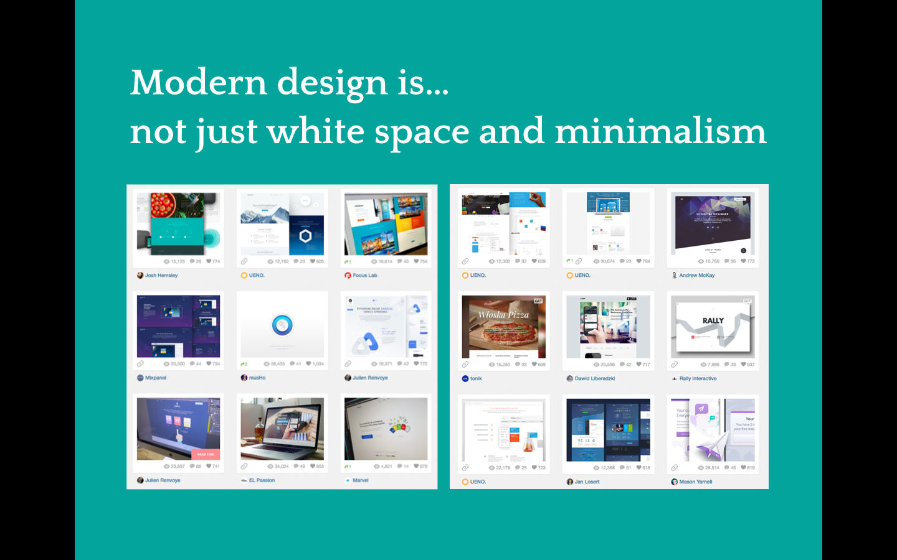
I think a lot of people could tell me what modern design looks like because, all of a sudden, design is popular.
Modern design looks like white space and minimalism. It looks flat. It’s often pretty. But this still doesn’t describe what it is.
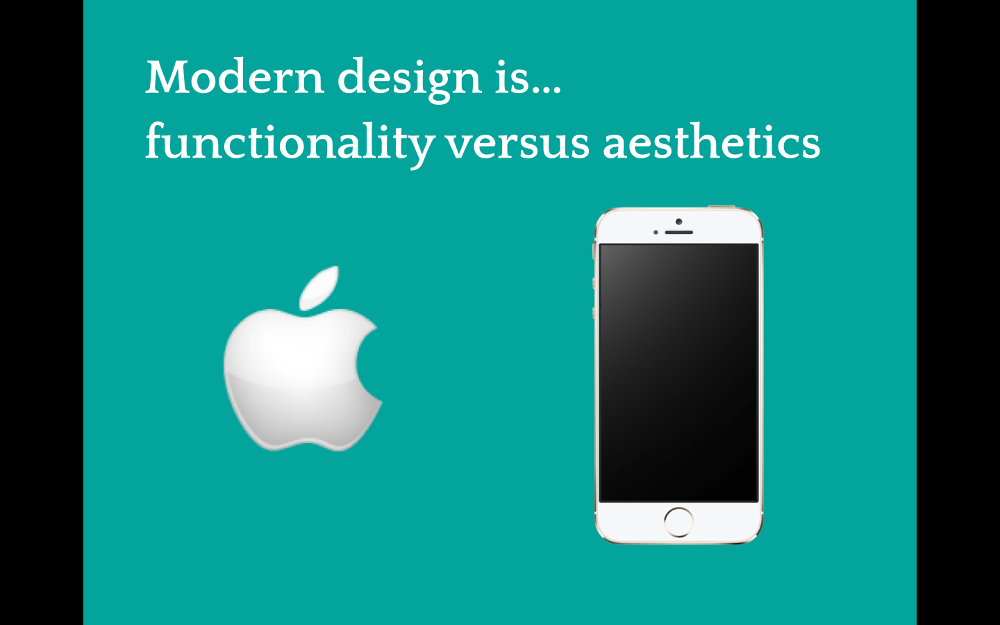
What is modern design?
For me, modern design is the result of functionality head butting aesthetics. It's simple. Beautiful. User-friendly. Clever. And it works.
Regardless of whether you love or hate Apple and their products, you need to understand what they did. They make it possible for all designers to make a fair living and to be valued members of teams. They also made difficult for businesses to release badly designed products or services. For that, we have something to be grateful for because now designers are in demand.
The thing that I love most about modern design is that I get to be apart of it. We were born in the right lifetime to be designers. We’re now valued and appreciated. We have high ranking positions in big companies. We create the interface for the modern world to connect. We have the opportunity to change our world.
So we have an exciting period ahead of us. We have new devices to design for. We also have new responsibility. It’s no longer acceptable to release a badly designed website or product.
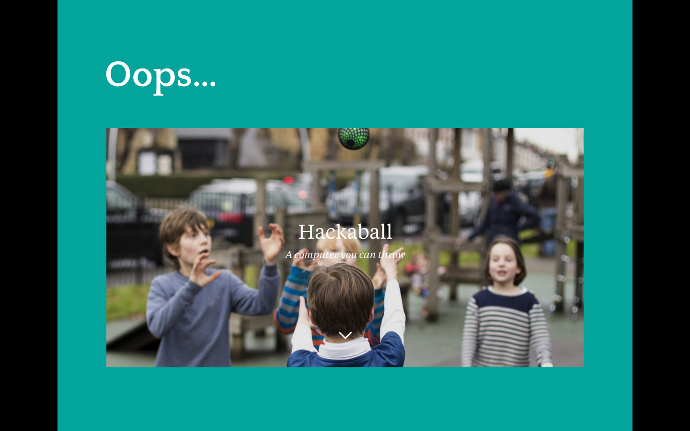
But… it still happens. Hackaball is a computer you can throw. It’s supposed to encourage children who want to program to also exercise. All I can say is… ‘why?’ That doesn’t answer any question.
So that’s why I’m here today. I want to talk about your process and how you can optimise it by immersing yourself in each phase.
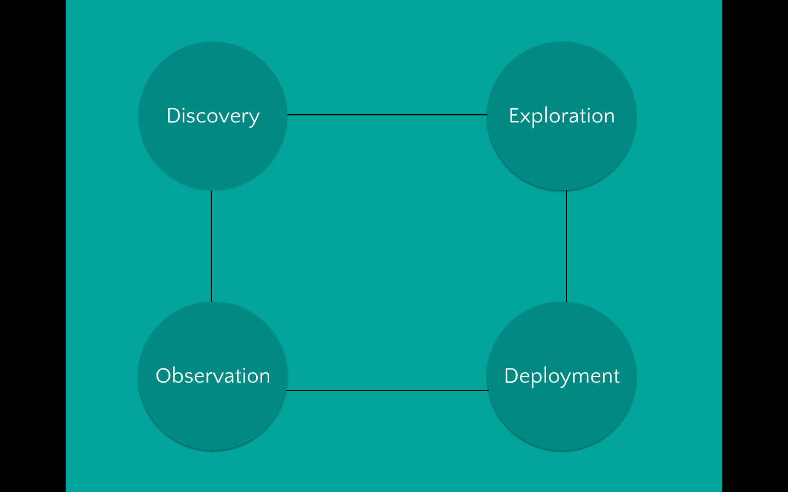
Your process should involve four key stages. The names vary, but this is how I label them. These phases break apart the design process. They create sections in a complex series of actions.
Together, let’s explore how you can use them to create great design.
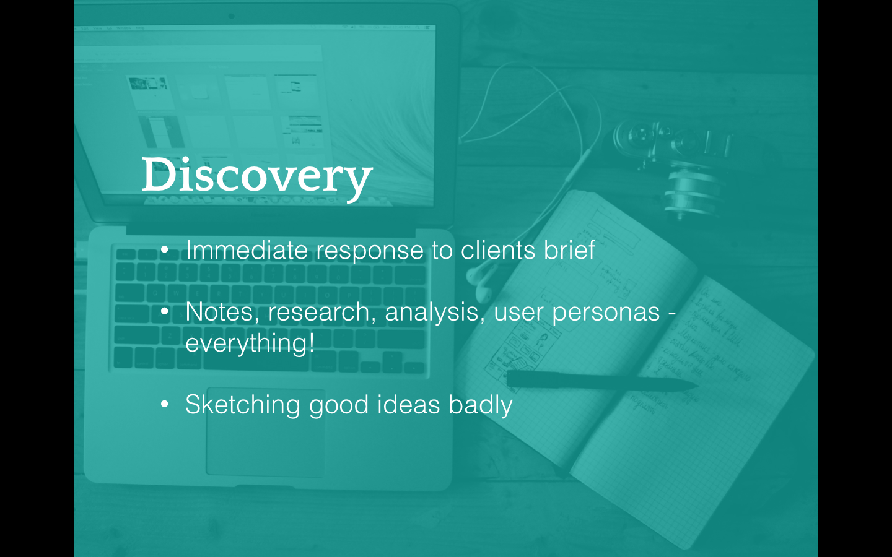
The first phase is Discovery - hands down, the most important phase. Discovery is your immediate response to the clients brief. Notes, research, competitor analysis, user personas, storyboards, mind mapping, brainstorming. You can use any medium but I like paper and pencil because I can draw something for anything and I can do it quickly.
Say you have a new client. They want a website and you have two weeks to do it. Your discovery phase is going to do all of your work for you. You can explore many different ideas for the website. Then, you can transpose those ideas to different devices wiith speed.
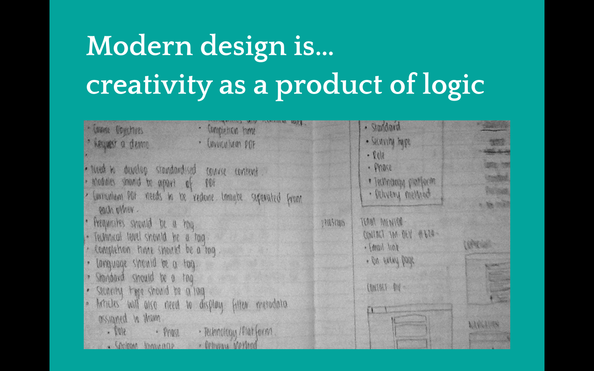
Your sketches are going to look ugly and bad. Don’t worry though, I like to think of sketching badly as a type of therapy. If I don’t draw something badly every day, I feel like I haven’t accomplished anything.
Although I’m creative, much of my creativity stems from logic. That’s why you’ll see lots of notes around my sketches. I’m exploring details and ideas. I state the obvious. I look at what I like, what I don’t like and why. My notes help me understand my designs and improve my work. It’s a basic technique but what it does is simplify complexity.
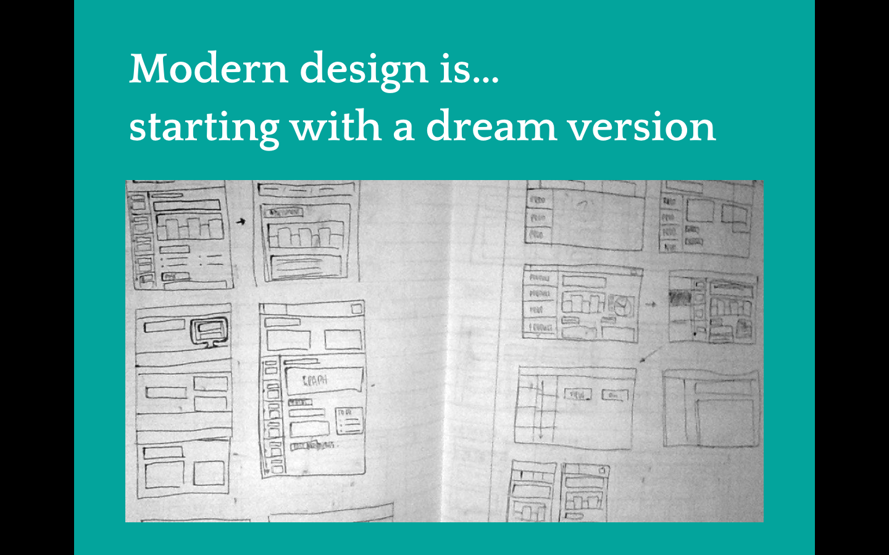
When I’ve finished all my research, I’m ready to start designing. The first thing I do is list all of the elements I’m going to need on the page. Then I start sketching, beginning with the desktop view. This may seem a little backwards, given the subject of my talk today. But hear me out.
I start by sketching on desktop because it’s always nice to start a project with a wild idea of what something could be. I call this the ‘dreamer’ version. When you have a ‘dreamer’ version, you can start sketching for other devices. Sketching for devices that don’t have room for dreams creates realistic expectations. It helps trim unnecessary creativity. Design for design sake is difficult on mobile.
When you have a refined idea for smaller devices, you can revisit the desktop design. I think about how I’ll make it move fluidly from mobile to desktop. I also consider what ideas I had in the desktop version that are unnecessary.
I could do this process up to 20 times with different ideas. Some ideas are good, some are bad and some just need polish. That’s where your taste comes into play.
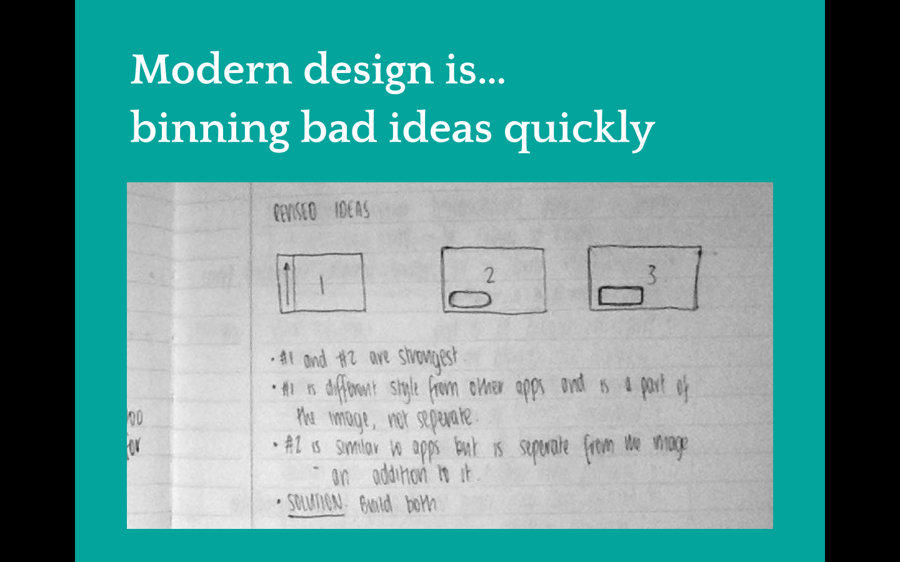
I can fill hundreds of pages with notes and sketches during Discovery. My ideas are rough and executed quickly. A lot of them are binned quickly too. There are many reasons for this:
- It might not work or answer the question.
- It could be too creative or not creative enough.
- Whatever it is, I acknowledge why it’s not working quickly.
This is a major part of the discovery phase.
The quicker you scrap your bad designs, the quicker you’ll move onto a better idea. Communication is key to understanding when to move on. Notes, talking to team mates or even talking to yourself works. Try to be a client and nit pick at details that aren’t quite right. Then, try to be a designer and sell it back to the client. These different viewpoints will allow you to understand your designs.
You need to evaluate your ideas. Make logical decisions about whether they answer the question. Take on board what’s being said and make a quick decision. Move on or keep going.
Your goal is to refine an idea in it’s intended environment. As web designers, our idea is often a website or web application. And they need the browser to flourish.
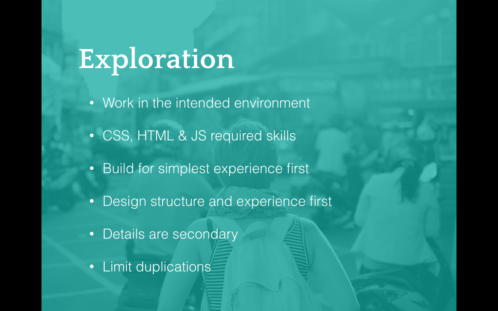
The next phase is exploration. You’ve sketched your ideas and refined your design. And now you need to create something with your sketches. I do this in the browser.
It’s not uncommon to design in the browser anymore. I think clients still want to see visual mockups that show pixel perfection. They want to see the product… which is fine, if we only had to design for desktop. But to do so for many, varied devices is painful and time-intensive.
Designing in the browser is quicker. You’re moving time spent in Photoshop to time preparing the website in it’s intended environment. The client can interact with the website as it’s built. They can see and feel it. From the beginning, you can start designing interactions. Mockups aren’t able to give that experience like a website can.
This is all dependant on you being able to code - CSS, HTML and Javascript. If you don’t know these, then I recommend you learn. It’s always a good idea to upskill but another reason to learn is control of your design.
If you can code you won’t ever hand your design to a developer. You’ll do it yourself.
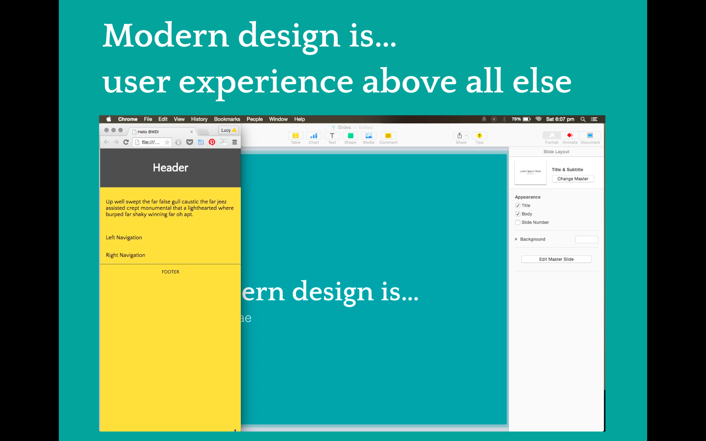
If you know how to code, then you can jump straight in. I recommend beginning with mobile first.
Why mobile?
It’s easier to fit more elements into a wider screen than it is to try and squish elements in to a narrow screen. You have an opportunity to streamline what you are building. The highest performing device should be able to access your website easily and beautifully. The simplest device should also have the same experience.
Begin by laying out a wireframe, the main structure of the website. Concentrate on the mobile experience. Is navigation easily accessible with the thumbs? Is font-size correct? Is your website accessible? Add styles to align with the branding identity last.
Once you have a mobile prototype, you can move to larger views. Decide where you want breakpoints and use media queries for those. Your stylesheet should apply to the most simple form of the website first. Then, when applicable, it should add additional styles. This is where the term mobile-first comes from. As much as possible, you want to limit your duplicate styles. This is one of the best ways to do it.
Now, because you’ve already started designing in the browser, you have a first version. It’s a real life prototype of the website. It moves, scales and responds. It can be released and tested. We call this rapid prototyping in the start up industry.
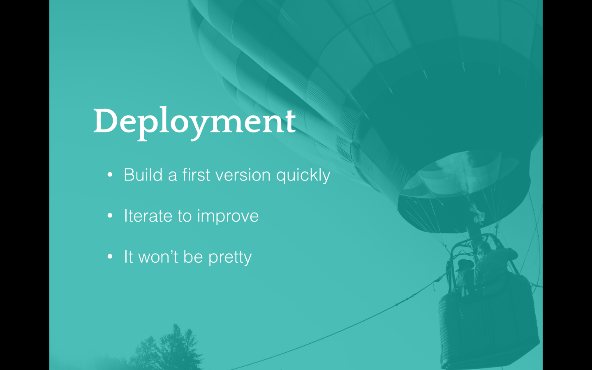
Your next phase of design is deployment.The idea is to quickly build a first version and iterate for improvements. The first version is functional, but commonly isn’t pretty.
The main reason for deploying prototypes is feedback. You can receive it early and regularly. You can improve design and functionality as you go. It also stops you from rolling out massive changes, only to find they provide an inadequate solution.
A perfect example is Facebook. Remember when they rolled out Timeline? It was a massive change and everyone hated it at the time. But now everyone loves it.
Facebook is lucky enough to have enough users that a mutual hatred of the interface doesn’t matter. The same cannot be said for your clients. This is why it’s important to make small changes over periods of time.
This depends on the client and what type of project you’re working on. Say you have a 5 week sprint on a small business website. With your normal technique, you’re probably not going to have the opportunity to get user feedback. But, if you start by designing in the browser, you can have the chance to do this. You can release a prototype and it can be experienced and interacted with. You can test it.
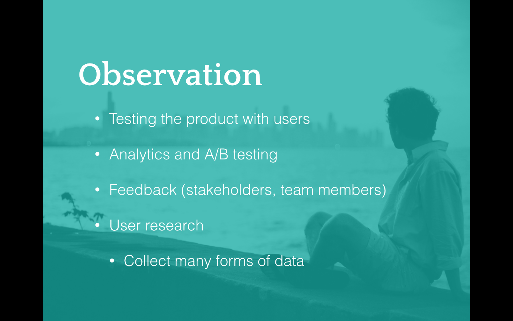
The next phase is Oberservation. Observation is essentially testing the product with users. Analytics and A/B testing are the most common. But they can also be entirely useless. Numbers look important but lack context or don’t provide direction.
Don’t assume that numbers are the truth. In some ways they are - X number of visitors came to your site, Y clicked the first link and Z clicked the second. This data fails you though. It fails you because it does not tell you why those users performed certain actions.
Data-centered design goes beyond analytics and A/B testing. The goal is to understand the everyday experience better. This is incredibly important to your clients businesses. The why of user behaviour is essential to improving their product or service.
Many would call this user experience. But I don’t think it should be a separate category. This is part of the designers job. To design a website, then to improve it based on it’s users needs.
To show you the importance of this, let’s look at an example. Say you’ve been given a project with a small business. Your objective is to further engage and retain users with design changes. If this were my project, the first thing I’d do would be to look at the data. I would want to the know what the exit rate and bounce rate are. With these two pieces of data, you can sort all the pages by those rates. You can find pages that are performing badly in relation to those rates.
Let’s say we have two pages that are performing badly. One is a page that links to another site. The other is a blog post. Now the first I can understand. It has an outward link and we encourage users to leave. But the second… why are my users leaving?
The only way to confirm this is to go to the user and ask them. User research is a huge subject and I couldn’t fit it into todays talk but I will give a brief overview. User interviews and focus groups require self-reporting of behaviour and preferences. Humans really suck at self-reporting - we have confirmation bias and we don’t understand ourselves very well.
This is why user testing should capture data by many methods. You can film the user as they go. Film their screen. Sit in the room with them and take notes. Require that they talk about what they’re doing and why.
If you can narrow it down to a page or two, you will have a better chance of success. You will be able to directly measure whether your design changes are making a difference. Is your bounce rate smaller or larger after making x changes?
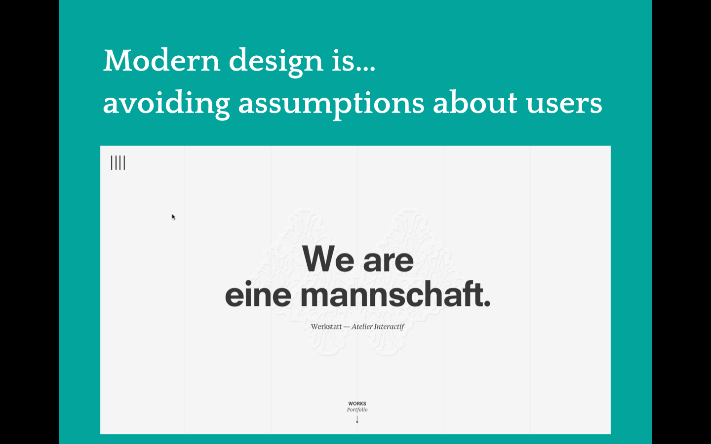
Without data, you’re just another person with an opinion. You’re also educated because you work with websites for a living. You understand them better than the average person.
A great example of this is the hamburger icon. As designers, we see that and intuitively know that it hides navigation. Many web professionals have done research on this and have found that the average user does NOT know that that is a button for off-screen navigation. They assume it's a graphical element, rather than a toggle.
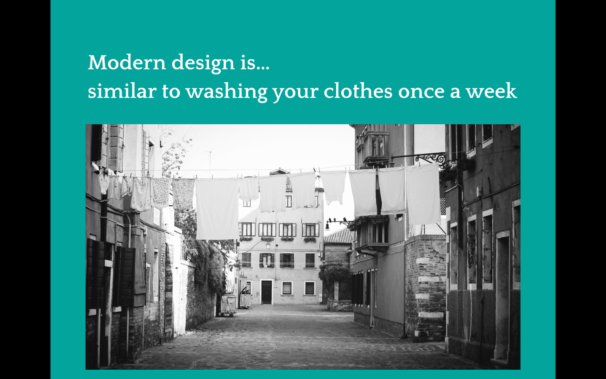
Modern design is like washing your clothes every week. They look okay, they smell okay, they feel okay. But it’s the principle. Something can always be made better by revisiting it. Your clothes definitely need washing. And your design definitely needs to be revised.
For start ups, this is normal. We have a dedicated team to a product. We revisit it constantly looking for improvements and listening to users.
For shorter projects, it may not be possible to revisit again. But you should create good relationships with your clients so you can educate them. Explain to them why they need to iterate to continue to develop their brand. That it’s not a static object, but an entity. A living, breathing thing. By being open about the process, you will get the opportunity to iterate on your work.
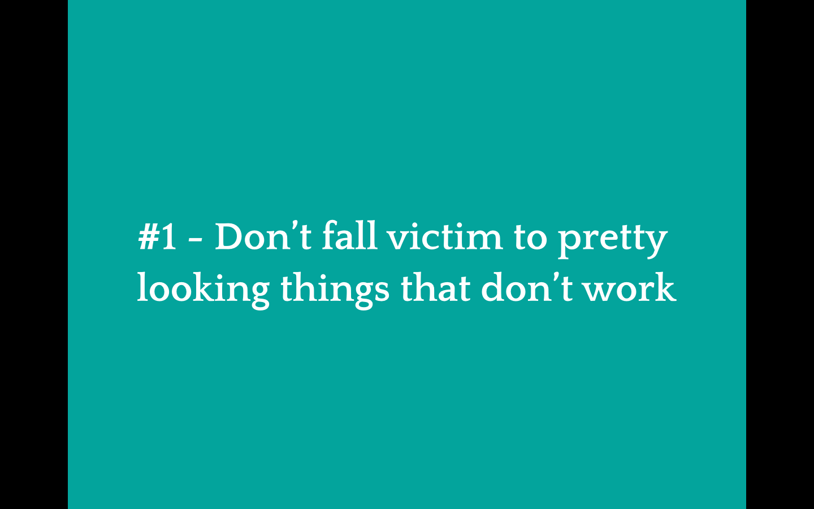
Don’t fall victim to pretty looking things that don’t work. This refers to what modern design looks like. Just because it’s popular doesn’t mean it will work for your client and users.
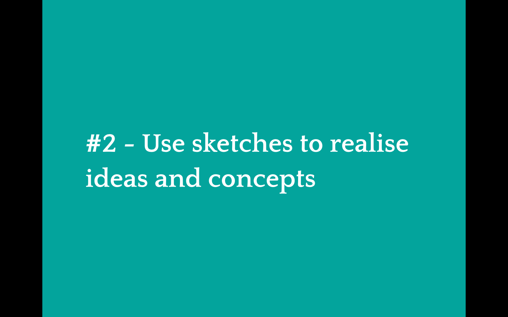
Use sketching to realise your ideas or your concepts. Once it’s on paper, you can see it and improve it.
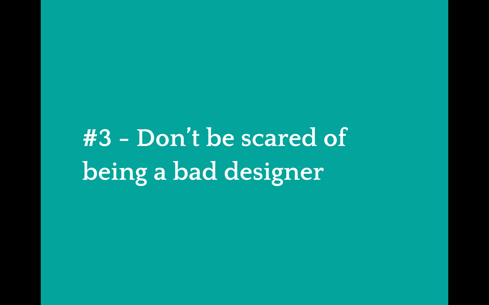
Don’t be scared of being a bad designer. Everyone has terrible ideas. If your sketches aren’t working, understand and identify why. Trust your instinct.
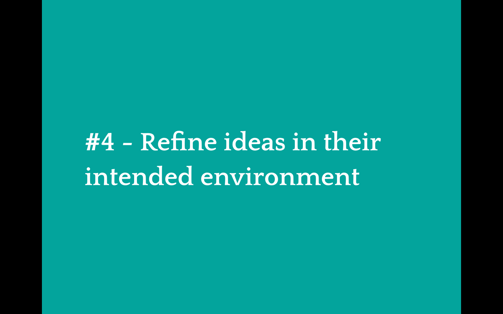
Refine your ideas in their intended environment. If you’re designing for web, you need your project to be in the environment it needs to perform in. Simple as that.
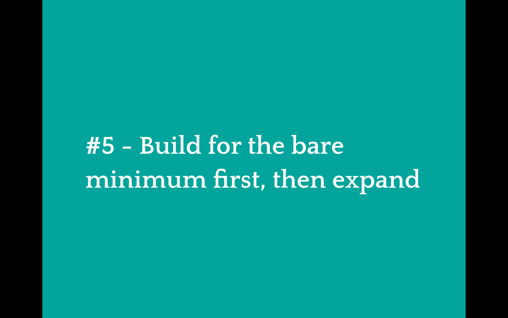
Build for the bare minimum first. Always start with mobile and scale upwards.
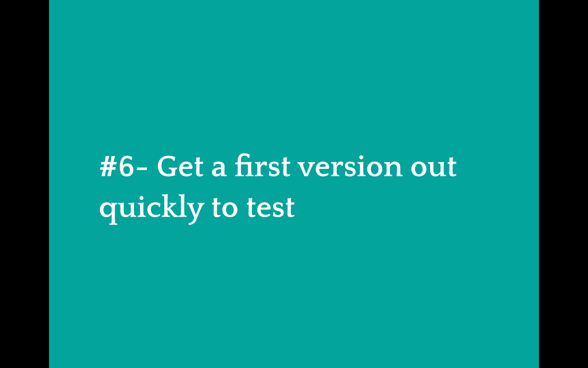
Get a first version out quickly. A mockup doesn’t count and cannot be used for realistic feedback.
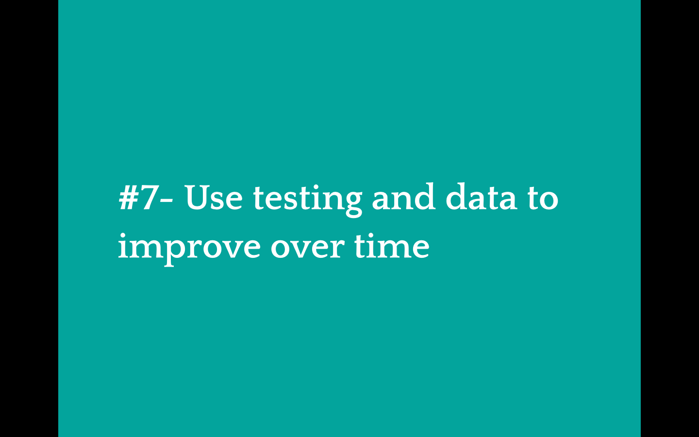
Use testing and data to improve over time. Brings users and clients in for user testing and analyse data to make refined decisions.
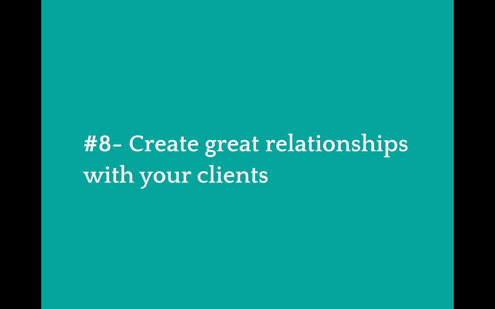
Create great relationships with your clients. You’ll enjoy your work and you’ll have the opportunity to revisit it.
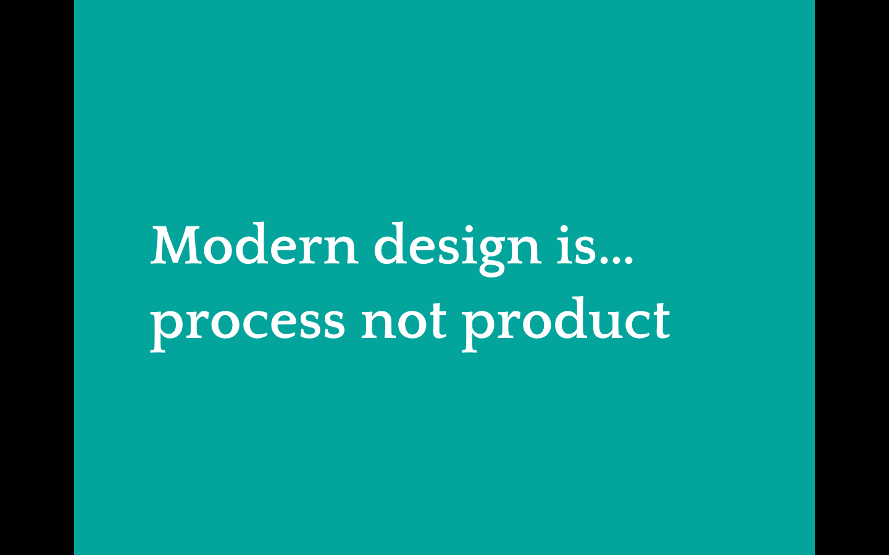
So how does this all tie back into what modern design is?
I believe that modern design is the clash of functionality and aesthetics. But mostly, I believe that modern design is process, not product. And by concentrating on your process, you too can create great design.